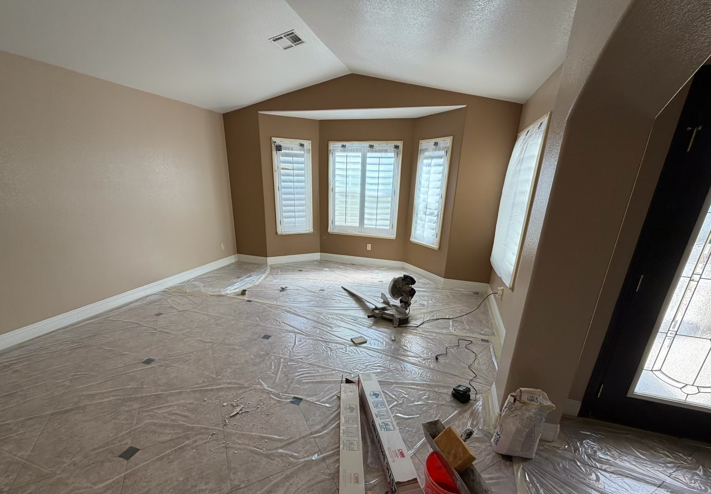

Our Services
See the real results behind every project.
Interior Painting


See the Process

Room prep

Painting in progress
Final walkthrough
Exterior Painting
In 2025, my crew and I painted this exterior near Anthem, covering the body, fascia, pop-outs, and doors.


See the Process

Touchups the body

Touching up Fascia

Cleanup
Cabinet Refinishing
This was a cabinet project for a satisfied homeowner we'd previously painted the house for a few years ago.


See the Process

Cleaning & Prepping

Sanding all the doors

Second coat of paint after applying primer

End Results

End Results
Commercial Painting
This restaurant needed its existing design covered and refreshed. We repainted the wall panels and benches, along with the AC ducts throughout the space, to give it a clean, finished look.
See the Process

Applying 2 coats of primer

Painting in progress

Second coat of painting

Giving the restaurant life

Painting the benches

Painting the front door

Finished look using pure white eggshell